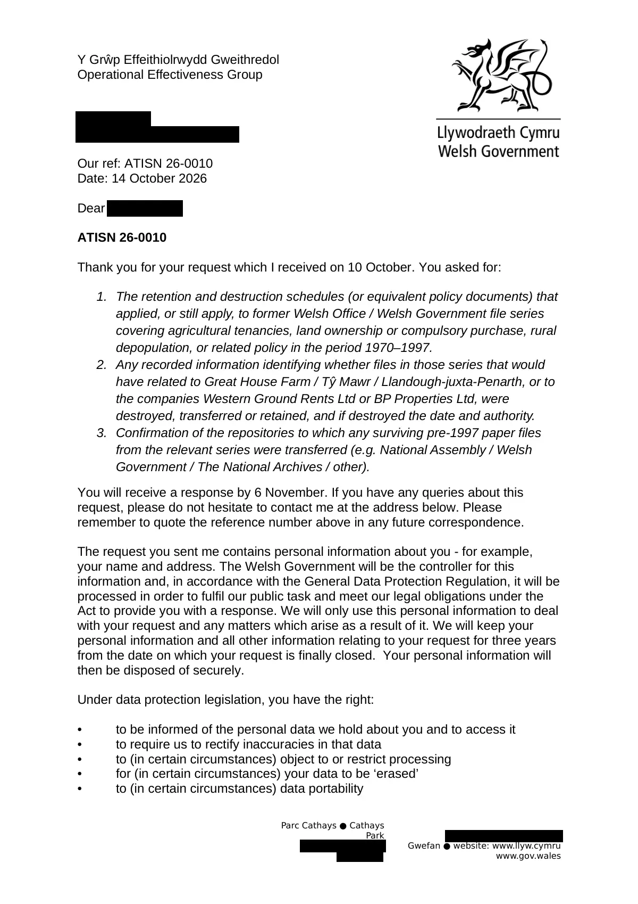

GHF-E106-R63-A1 acknowledgement only
Welsh Government: ATISN 26-0010 acknowledgement

Transcript
Requester [email redacted] Our ref: ATISN 26-0010 Date:14October 2026 Dear Requester ATISN 26-0010 Thank you for your request which I received on 10 October. You asked for: The retention and destruction schedules (or equivalent policy documents) that applied, or still apply, to former Welsh Office / Welsh Government file series covering agricultural tenancies, land ownership or compulsory purchase, rural depopulation, or related policy in the period 1970–1997. Any recorded information identifying whether files in those series that would have related to Great House Farm / Tŷ Mawr / Llandough-juxta-Penarth, or to the companies Western Ground Rents Ltd or BP Properties Ltd, were destroyed, transferred or retained, and if destroyed the date and authority. Confirmation of the repositories to which any surviving pre-1997 paper files from the relevant series were transferred (e.g. National Assembly / Welsh Government / The National Archives / other). You will receive a response by 6 November. If you have any queries about this request, please do not hesitate to contact me at the address below. Please remember to quote the reference number above in any future correspondence.
Read more
The request you sent me contains personal information about you - for example, your name and address. The Welsh Government will be the controller for this information and, in accordance with the General Data Protection Regulation, it will be processed in order to fulfil our public task and meet our legal obligations under the Act to provide you with a response. We will only use this personal information to deal with your request and any matters which arise as a result of it. We will keep your personal information and all other information relating to your request for three years from the date on which your request is finally closed. Your personal information will then be disposed of securely. Under data protection legislation, you have the right: •to be informed of the personal data we hold about you and to access it •to require us to rectify inaccuracies in that data •to (in certain circumstances) object to or restrict processing •for (in certain circumstances) your data to be ‘erased’ •to (in certain circumstances) data portability •to lodge a complaint with the Information Commissioner’s Office (ICO) who is our independent regulator for data protection For further information about the information which the Welsh Government holds and its use, or if you wish to exercise your rights under the GDPR, please see contact details below: Data Protection Officer Welsh Government Cathays Park [address redacted] E-mail: [email redacted] The contact details for the Information Commissioner’s Office are: Information Commissioner’s Office Wycliffe House [address redacted] Wilmslow Cheshire [address redacted] Website:www.ico.org.uk Any information released under the Freedom of Information Act 2000 or Environmental Information Regulations 2004 will be listed in the Welsh Government’s Disclosure Log (athttps://gov.wales/freedom-of-information-responses). Yours sincerely Jamie Jenkins
Artifact description
Acknowledges receipt of the retention and disposal schedules request and encloses an acknowledgement letter.
| Catalogue ID | GHF-E106-R63-A1 |
|---|---|
| What it is | Document from Welsh Government / Cadw. Attached to an email received on 14 October 2026, their reference ATISN 26-0010. 2 pages. |
| From | Welsh Government / Cadw |
| Email received | 14 October 2026 |
| Their reference | ATISN 26-0010 |
| Pages | 2 |
| File | ATISN 26-0010 - Acknowledgement.odt (140 KB) |
| State | Read |
Our integration
The Welsh Government's acknowledgement of ATISN 26-0010, received 10 October 2026, with a response promised by 6 November. It restates the three questions: the retention and destruction schedules for 1970–1997 land and tenancy file series; whether any files on Great House Farm / Tŷ Mawr, Western Ground Rents Ltd or BP Properties Ltd were destroyed, transferred or kept; and where surviving pre-1997 paper files went.
Why it matters: this is the question the Wales Office review (GHF-E106-R58-A1) passes on. Two departments each point to the other's holdings for the 1988 paper file. This request is meant to show where that trail ends.
What cuts against the case: the acknowledgement was prompt and the promised date is within statutory time. The disclosure that followed (GHF-E106-R56-A1) did give schedules. The open point is the search for named files, now under internal review (GHF-E106-R59-A1).
Related: GHF-E106-R59-A1 — Welsh Government: ATISN 26-0010 internal review acknowledged · The covering email · What They Don’t Say: WTDS-d262c862-1, WTDS-d3b374e7-1, WTDS-d3b374e7-2 · EV-0497 in the evidence catalogue · Timeline · Disclosure Dartboard